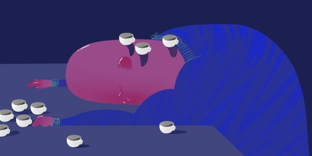

Ничего не могу: что такое ментальное истощение и как с ним справиться
12 декабря 2021 года
Если вы чувствуете, что «сил моих больше нет», взбодриться и зарядиться энергией помогут несколько простых советов.
В голову совсем не приходят новые идеи. Каждая рабочая задача отнимает колоссально много времени и сил. Даже небольшие решения даются с трудом. Малейшая неприятность выбивает из колеи. Если вам знакомы эти ситуации, возможно, вы столкнулись с ментальным истощением. Рассказываем, как его распознать и что сделать, чтобы с ним справиться.
Что такое ментальное истощение и почему оно возникает
Это сильная эмоциональная и интеллектуальная усталость, из-за которой человек не может нормально функционировать и чувствует себя слабым и подавленным. Физические силы на то, чтобы работать, уделять время семье и увлечениям, у него есть, а вот энтузиазма и решимости — уже нет. Ментальное истощение может быть одним из признаков выгорания.
Оно появляется из-за высокой нагрузки, стресса, проблем на работе и в личной жизни. Часто ментальное истощение может быть следствием депрессии, хронических заболеваний, бессонницы.
Иногда такое состояние возникает, когда в жизни у человека всё в принципе хорошо, но просто навалилось очень много задач, которые требуют его внимания и усилий, — и нет времени передохнуть и восстановиться.
Причём дальше человек попадает в замкнутый круг: у него не хватает сил справиться с делами, они накапливаются, давят на него, он пытается выбраться из-под этой лавины задач и выматывается ещё сильнее.
Как понять, что у вас ментальное истощение
Есть несколько признаков:
- 1. Вы быстро устаёте.
- 2. Вы легко раздражаетесь.
- 3. Любая мелочь может вас расстроить.
- 4. Вы стали часто опаздывать и ничего не успеваете.
- 5. Вы долго не можете приняться за очередную задачу, тянете время.
- 6. Вы постоянно чувствуете себя подавленным.
- 7. Даже простые дела даются с трудом, вызывают страх и панику.
- 8. Вы страдаете от бессонницы или, наоборот, очень много спите.
- 9. Вы пессимистично смотрите в будущее.
- 10. Вы избегаете ответственности, вам сложно принимать решения.
- 11. Вам трудно сосредоточиться.
Как преодолеть ментальное истощение
Cамое очевидное и одновременно самое трудное решение — взять паузу и отдохнуть. Отложить часть дел, а остальные делегировать, написать заявление на отпуск, как следует выспаться, хотя бы на пару дней сменить обстановку. Но это не всегда возможно. Поэтому психологи рекомендуют ещё несколько действий, которые могут немного облегчить ваше состояние.
1. «Отключите» часть органов чувств
Большая сенсорная нагрузка: свет, звук, разговоры, тактильные ощущения — могут сильно выматывать. Попробуйте исключить часть раздражителей и провести хотя бы несколько минут в тишине и темноте. Купите плотные шторы в комнату, выключайте телевизор, если не смотрите его, не оставляйте музыку или радио играть фоном, надевайте наушники, когда едете в метро. Это не радикальное решение проблемы, но такой подход может хотя бы чуть-чуть снизить общую усталость и раздражительность.
2. Принимайте меньше решений
Судьбоносные решения отложите хотя бы на пару недель, более мелкие постарайтесь сократить: ешьте на обед одно и то же блюдо каждый день, заказывайте один и тот же сорт кофе, добирайтесь до работы одной и той же дорогой, заранее подготовьте несколько комплектов одежды, чтобы с утра не приходилось выбирать, что надеть. Необходимость принимать даже такие незначительные решения может здорово вымотать, а передышка прибавит вам немного сил.
3. Смотрите на растения
Исследователи из Мельбурнского университета провели небольшой эксперимент. Его участников попросили смотреть в окно на соседнюю крышу, на которой был разбит небольшой сад. Тесты показали, что даже после 40-секундных наблюдений участники стали более сосредоточенными и совершали меньше ошибок в учёбе в течение дня.